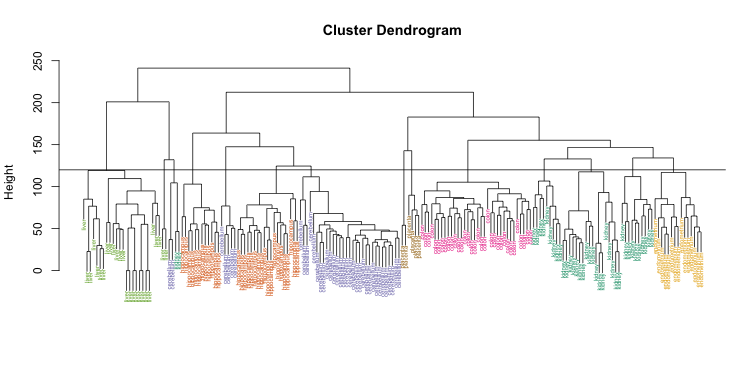

Clustering
Last updated on 2025-07-18 | Edit this page
Estimated time: 60 minutes
Overview
Questions
- How can clusters within high dimensional data can be discovered?
Objectives
- Perform clustering analysis.
- Interpret a heatmap.
Clustering
We will demonstrate the concepts and code needed to perform clustering analysis with the tissue gene expression data:
R
library(tissuesGeneExpression)
data(tissuesGeneExpression)
To illustrate the main application of clustering in the life sciences, let’s pretend that we don’t know these are different tissues and are interested in clustering. The first step is to compute the distance between each sample:
R
d <- dist( t(e) )
ERROR
Error: object 'e' not foundHierarchical clustering
With the distance between each pair of samples computed, we need
clustering algorithms to join them into groups. Hierarchical clustering
is one of the many clustering algorithms available to do this. Each
sample is assigned to its own group and then the algorithm continues
iteratively, joining the two most similar clusters at each step, and
continuing until there is just one group. While we have defined
distances between samples, we have not yet defined distances between
groups. There are various ways this can be done and they all rely on the
individual pairwise distances. The helpfile for hclust
includes detailed information.
We can perform hierarchical clustering based on the distances defined
above using the hclust function. This function returns an
hclust object that describes the groupings that were
created using the algorithm described above. The plot
method represents these relationships with a tree or dendrogram:
R
library(rafalib)
mypar()
hc <- hclust(d)
ERROR
Error: object 'd' not foundR
hc
ERROR
Error: object 'hc' not foundR
plot(hc,labels=tissue,cex=0.5)
ERROR
Error: object 'hc' not foundDoes this technique “discover” the clusters defined by the different
tissues? In this plot, it is not easy to see the different tissues so we
add colors by using the myplclust function from the
rafalib package.
R
myplclust(hc, labels=tissue, lab.col=as.fumeric(tissue), cex=0.5)
ERROR
Error: object 'hc' not foundVisually, it does seem as if the clustering technique has discovered the tissues. However, hierarchical clustering does not define specific clusters, but rather defines the dendrogram above. From the dendrogram we can decipher the distance between any two groups by looking at the height at which the two groups split into two. To define clusters, we need to “cut the tree” at some distance and group all samples that are within that distance into groups below. To visualize this, we draw a horizontal line at the height we wish to cut and this defines that line. We use 120 as an example:
R
myplclust(hc, labels=tissue, lab.col=as.fumeric(tissue),cex=0.5)
ERROR
Error: object 'hc' not foundR
abline(h=120)
ERROR
Error in int_abline(a = a, b = b, h = h, v = v, untf = untf, ...): plot.new has not been called yet If we use the line above to cut the tree into clusters, we can examine how the clusters overlap with the actual tissues:
R
hclusters <- cutree(hc, h=120)
ERROR
Error: object 'hc' not foundR
table(true=tissue, cluster=hclusters)
ERROR
Error: object 'tissue' not foundWe can also ask cutree to give us back a given number of
clusters. The function then automatically finds the height that results
in the requested number of clusters:
R
hclusters <- cutree(hc, k=8)
ERROR
Error: object 'hc' not foundR
table(true=tissue, cluster=hclusters)
ERROR
Error: object 'tissue' not foundIn both cases we do see that, with some exceptions, each tissue is uniquely represented by one of the clusters. In some instances, the one tissue is spread across two tissues, which is due to selecting too many clusters. Selecting the number of clusters is generally a challenging step in practice and an active area of research.
K-means
We can also cluster with the kmeans function to perform
k-means clustering. As an example, let’s run k-means on the samples in
the space of the first two genes:
R
set.seed(1)
km <- kmeans(t(e[1:2,]), centers=7)
ERROR
Error: object 'e' not foundR
names(km)
ERROR
Error: object 'km' not foundR
mypar(1,2)
plot(e[1,], e[2,], col=as.fumeric(tissue), pch=16)
ERROR
Error: object 'e' not foundR
plot(e[1,], e[2,], col=km$cluster, pch=16)
ERROR
Error: object 'e' not foundIn the first plot, color represents the actual tissues, while in the
second, color represents the clusters that were defined by
kmeans. We can see from tabulating the results that this
particular clustering exercise did not perform well:
R
table(true=tissue,cluster=km$cluster)
ERROR
Error: object 'tissue' not foundThis is very likely due to the fact that the first two genes are not informative regarding tissue type. We can see this in the first plot above. If we instead perform k-means clustering using all of the genes, we obtain a much improved result. To visualize this, we can use an MDS plot:
R
km <- kmeans(t(e), centers=7)
ERROR
Error: object 'e' not foundR
mds <- cmdscale(d)
ERROR
Error: object 'd' not foundR
mypar(1,2)
plot(mds[,1], mds[,2])
ERROR
Error: object 'mds' not foundR
plot(mds[,1], mds[,2], col=km$cluster, pch=16)
ERROR
Error: object 'mds' not foundBy tabulating the results, we see that we obtain a similar answer to that obtained with hierarchical clustering.
R
table(true=tissue,cluster=km$cluster)
ERROR
Error: object 'tissue' not foundHeatmaps
Heatmaps are ubiquitous in the genomics literature. They are very useful plots for visualizing the measurements for a subset of rows over all the samples. A dendrogram is added on top and on the side that is created with hierarchical clustering. We will demonstrate how to create heatmaps from within R. Let’s begin by defining a color palette:
R
library(RColorBrewer)
hmcol <- colorRampPalette(brewer.pal(9, "GnBu"))(100)
Now, pick the genes with the top variance over all samples:
R
library(genefilter)
rv <- rowVars(e)
ERROR
Error in h(simpleError(msg, call)): error in evaluating the argument 'x' in selecting a method for function 'rowSums': object 'e' not foundR
idx <- order(-rv)[1:40]
ERROR
Error: object 'rv' not foundWhile a heatmap function is included in R, we recommend
the heatmap.2 function from the gplots package
on CRAN because it is a bit more customized. For example, it stretches
to fill the window. Here we add colors to indicate the tissue on the
top:
R
library(gplots) ##Available from CRAN
cols <- palette(brewer.pal(8, "Dark2"))[as.fumeric(tissue)]
ERROR
Error: object 'tissue' not foundR
head(cbind(colnames(e),cols))
ERROR
Error: object 'e' not foundR
heatmap.2(e[idx,], labCol=tissue,
trace="none",
ColSideColors=cols,
col=hmcol)
ERROR
Error: object 'e' not foundWe did not use tissue information to create this heatmap, and we can quickly see, with just 40 genes, good separation across tissues.
Exercise 1
Create a random matrix with no correlation in the following way:
R
set.seed(1)
m = 10000
n = 24
x = matrix(rnorm(m * n), m, n)
colnames(x) = 1:n
Run hierarchical clustering on this data with the hclust
function with default parameters to cluster the columns. Create a
dendrogram.
In the dendrogram, which pairs of samples are the furthest away from
each other?
A) 7 and 23
B) 19 and 14
C) 1 and 16
D) 17 and 18
d <- dist(t(x))hc <- hclust(d)mypar()plot(hc)
A hint to determine the disimilarity between two samples is to look at how hight would be the dendogram be cut in order to have these two samples in the same group. The higher the cut, the disimilar those samples are. In this case the cut that would join sample 19 and 14 is higher than any of the other pairs.
7 and 23 - 141
19 and 14 - 143
1 and 16 - 142
17 and 18 - 142
The answer is B: 19 and 14. The answer might be different due to the random numbers.
Exercise 2
Set the seed at 1, set.seed(1) and replicate the
creation of this matrix 100 times:
R
m = 10000
n = 24
x = matrix(rnorm(m * n), m, n)
then perform hierarchical clustering as in the solution to exercise
1, and find the number of clusters if you use cuttree at
height 143. This number is a random variable. Based on the Monte Carlo
simulation, what is the standard error of this random variable?
R
set.seed(1)
res_list <- replicate(100, {
m = 10000
n = 24
# Generate a new matrix every repetition.
x = matrix(rnorm(m * n), m, n)
d <- dist(t(x))
# Run the hierarchical clustering on the new matrix.
hc <- hclust(d)
# Compute how many clusters form if we cut the dendogram at a height of 143.
hclusters <- cutree(hc, h=143)
num_clus <- length(unique(hclusters))
return(num_clus)
})
# Compute the Standard Error of the number of clusters created by cutting
# the dendograms at a height of 143 on each repetition.
popsd(res_list)
Exercise 3
Run kmeans with 4 centers for the blood RNA data:
R
library(GSE5859Subset)
data(GSE5859Subset)
Set the seed to 10, set.seed(10) right before running
kmeans with 5 centers. Explore the relationship of clusters and
information in sampleInfo. Which of the following best
describes what you find? A) sampleInfo$group is driving the
clusters as the 0s and 1s are in completely different clusters. B) The
year is driving the clusters. C) Date is driving the
clusters. D) The clusters don’t depend on any of the column of
sampleInfo
R
km <- kmeans(t(geneExpression), centers = 5)
km$cluster
# Use the group as the true clusters of our data, and compare it agains the
# clusters found by k-means.
table(true = sampleInfo$group, cluster = km$cluster)
# Now use the date of acquisition of the samples as the true clusters and
# compare it against the same clusters found by k-means.
table(true = sampleInfo$date, cluster = km$cluster)
The answer is C: Date is driving the clusters.
Exercise 4
Load the data:
R
library(GSE5859Subset)
data(GSE5859Subset)
Pick the 25 genes with the highest across sample variance. This function might help:
R
install.packages("matrixStats")
library(matrixStats)
?rowMads ## we use mads due to a outlier sample
Use heatmap.2 to make a heatmap showing the
sampleInfo$group with color, the date as labels, the rows
labelled with chromosome, and scaling the rows. What do we learn from
this heatmap? A) The data appears as if it was generated by
rnorm.
B) Some genes in chr1 are very variable.
C) A group of chrY genes are higher in group 0 and appear to drive the
clustering. Within those clusters there appears to be clustering by
month.
D) A group of chrY genes are higher in October compared to June and
appear to drive the clustering. Within those clusters there appears to
be clustering by samplInfo$group.
R
hmcol <- colorRampPalette(brewer.pal(9, "GnBu"))(100)
month = format( sampleInfo$date, "%m")
rv <- rowVars(geneExpression)
idx <- order(-rv)[1:25]
cols <- palette(brewer.pal(8, "Dark2"))[as.fumeric(as.character(sampleInfo$group))]
# Compute the heatmap using the intensity of the gene expressions to color
# the graph. We are using the months of acquisition of the samples as the
# columns in our plot, so we can see how the samples arrange according to the date.
heatmap.2(geneExpression[idx,],
trace = 'none', labRow = geneAnnotation[idx,]$CHR,
col = hmcol, labCol = month,
ColSideColors = cols)
The correct answer is C: A group of chrY genes are higher in group 0
and appear to drive the clustering. Within those clusters there appears
to be clustering by month. Answer A is wrong because if the data were
generated by norm, the color distribution of the heatmap
would be entirely random. Answer B is wrong because the colors in the
row chr1 are more or less the same except for one column (one sample).
Answer D is wrong chrY genes are higher in June, not October.
Exercise 5
Create a large dataset of random data that is completely independent
of sampleInfo$group like this:
R
set.seed(17)
m = nrow(geneExpression)
n = ncol(geneExpression)
x = matrix(rnorm(m * n), m, n)
g = factor(sampleInfo$g)
Create two heatmaps with these data. Show the group g
either with labels or colors. First, take the 50 genes with smallest
p-values obtained with rowttests. Then, take the 50 genes
with largest standard deviations. Which of the following statements is
true?
A) There is no relationship between g and x,
but with 8,793 tests some will appear significant by chance. Selecting
genes with the t-test gives us a deceiving result.
B) These two techniques produced similar heatmaps.
C) Selecting genes with the t-test is a better technique since it
permits us to detect the two groups. It appears to find hidden
signals.
D) The genes with the largest standard deviation add variability to the
plot and do not let us find the differences between the two groups.
R
library(genefilter)
# p-value
# Perform a t-test on the expression of each gene to determine if they have
# an effect different from 0.
pvals <- rowttests(x, g)$p.value
# Select the top 50 genes that show the most statistical significance of their
# expression, obtained by the t-tests.
idx <- order(pvals)[1:50]
cols <- palette(brewer.pal(8, "Dark2"))[as.fumeric(as.character(sampleInfo$g))]
heatmap.2(x[idx,],
trace = 'none', labRow = geneAnnotation[idx,]$CHR,
col = hmcol, labCol = month,
ColSideColors = cols)
# std dev
# Compute the standard deviation of the expression of each gene.
sds <- rowSds(x,g)
# Select the top 50 genes that show a higher variance of their expression
# acoss all the samples.
idx <- order(-sds)[1:50]
cols <- palette(brewer.pal(8, "Dark2"))[as.fumeric(as.character(sampleInfo$g))]
heatmap.2(x[idx,],
trace = 'none', labRow = geneAnnotation[idx,]$CHR,
col = hmcol, labCol = month,
ColSideColors = cols)
The answer is A: There is no relationship between g and x, but with 8,793 tests some will appear significant by chance. Selecting genes with the t-test gives us a deceiving result.
Recall that we have already selected smallest p-values from a dataset in which the null hypothesis is true. Therefore, we can see clusters that indicate that there is a significant difference between sample groups. However, this significance is not real because we know that the null hypothesis is true.
Key Points
- We can use Euclidean distance to define the dissimilarity between samples.
- We can also use other metrics according to the prior knowledge we have from our data.